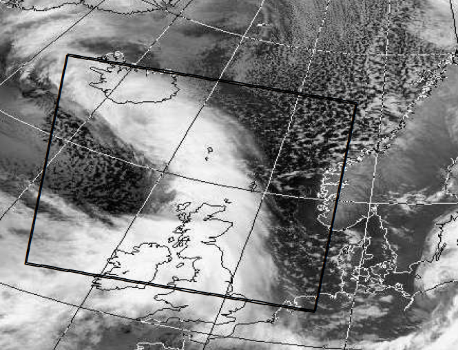

FFM234, Datoruppgift 1: Visualisering av fält
Aug 10, 2019
Introduktion
Ett viktigt vetenskapligt användningsområde för datorer är att visualisera olika fysikaliska förlopp. Detta består ofta i att skapa bilder av två- eller tre-dimensionella fält. Det finns många sofistikerade sätt att göra detta på , särskilt om man vill titta på tidsutvecklingen av tre-dimensionella fält. Speciella programpaket och, i vissa fall, datorer har utvecklats för detta ändamål. Vi skall dock begränsa oss till enklare fält i två dimensioner för vilka vi kan använda ett enkelt matematikprogram såsom Matlab eller Python (så kallade interpreterande programspråk).Vi kan särskilja två huvudtyper av fält inom den här kursen, skalära fält och vektorfält. Ett enkelt exempel på ett skalärt fält är trycket i en gas. Skalära fält illustrerar man ofta genom att rita nivåkurvor, det vill säga kurvor längs med vilka fältet antar ett konstant värde. På väderkartor ritar man till exempel ut isobarer för att visa hur trycket varierar. En annan möjlighet är att ge varje punkt en färg, som anger ungefär hur starkt fältet är i just den punkten. Ibland kan man välja att illustrera ett fält med en färgskala och ett annat fält med nivåkurvor.
Vektorfält är något krångligare att illustrera eftersom de skall ha både en storlek och en riktning. Det enklaste sättet att göra detta på med en modern dator är att rita ut pilar. Långa pilar där fältet är starkt och korta pilar där det är svagt. Ett annat sätt är att konstruera fältlinjer. Tangenten till en fältlinje ger då fältets riktning i en punkt, och tätheten av fältlinjerna ger fältets styrka.
En speciell typ av skalärt fält är en potential. Potentialen kan visualiseras genom att plotta nivåkurvor, vilka vi i detta fall kallar ekvipotentialkurvor (eller ekvipotentialytor om vi arbetar i tre dimensioner). Ur en potential \( \phi \) kan vi beräkna en fältstyrka \( \vec{F} = - \vec{\vnabla}\phi \). Till \( \vec{F} \) kan vi sedan konstruera fältlinjer. En figur där vi plottar både ekvipotentialytorna till \( \phi \) och fältlinjerna till \( \vec{F} \) kallar vi en fältbild.
Meteorologi
Meteorologi är ett vetenskapligt område där fältteori ofta tillämpas. För att göra prognoser följer meteorologer utvecklingen av lufttryck, temperatur och vind med hjälp av väderkartor. Vi vill här visa hur \( \vnabla \) operatorn, som t.ex. ger ett vektorfälts divergens och rotation, kan vara användbar i analysen av väderdata. Förhoppningsvis kommer detta exempel också att bidra till att fördjupa den fysikaliska förståelsen av divergens och virvlar.
Den meteorologiska data vi kommer att analysera är från ett område i Nordatlanten, Norska havet och Nordsjön som omfattar Norges västkust, norra England, Skottland, Nordirland och Island (se Figur 1). Ett stort antal manuella och automatiska väderstationer är verksamma i området och genomför regelbundna observationer flera gånger om dagen.
Figure 1: Den väderdata som vi kommer att analysera är från det markerade området i kartan.

Väderstationer är inte jämnt fördelade och är, av naturliga orsaker, mer frekventa över land än över hav. Mätningar från ett världsomspännande nätverk av mätstationer ger data som analyseras med prognosmodeller. Dessa modeller kan bedöma tillståndet i atmosfären också i områden där observationer saknas. Med sådana modeller kan man till exempel beräkna lufttryck, vindhastighet och vindriktning i en uppsättning punkter som bildar ett regelbundet gittersystem längs markytan (Figur 3).
De uppgifter som vi kommer att använda kommer från Meteorologisk institutt, Blindern, Oslo. Det är lufttryck vid havsnivån och vindvektorer i isobarytan 850 hektopascal, som i sin tur ligger ca 1000- 1500 meter över havsnivån. Dessa data beräknas i ett rutsystem med \( \Delta x = \Delta y = 55 \) km, tisdagen den 19:e februari, 2002 kl 18 UTC (standardtid) och representerar den bästa möjliga uppskattningen av tillståndet i atmosfären vid det här tillfället. Datan har gjorts tillgänglig av Oslo Universitet för kursen MEK1100 – Feltteori og vektoranalyse.
En satellitbild (Figur 2) tas samma dag, men vid ett något tidigare tillfälle (16:13 UTC). Bilden visar att ett stort sammanhängande regnsystem täcker Irland, en del av England och Skottland och sträcker sig som ett ljusgrått band nordväst bort över Island. Nordost om detta regnsystem, dvs över Nordsjön och Norska havet, är det nästan klar himmel med lätta skurar i de norra delarna av Norska havet. På västra sidan av regnsystemet, dvs söder om Island, är det nästan helt klar himmel. Ni kommer att kunna få ett mått på hur bra er dataanalys är genom att jämföra era resultat med denna satellitbild.
Figure 2: Satellitbild från den 19:e februari, 2002. Ljusgrå färgton motsvarar regnväder, medan mörka toner är hav eller land. Bilden kan laddas ner i pdf format

Uppgift
Uppgifterna nedan går ut på att analysera och visualisera väderdata. Ni kan förslagsvis använda ett interpreterande programmeringsspråk för att utföra detta. En möjlighet är att använda Matlab, men ett minst lika bra alternativ är Python – som dessutom är gratis och bygger på öppen källkod. Några nyttiga kommandon för bägge dessa programmeringsspråk beskrivs i nästa kapitel. Mer finns att läsa i kurskompendiet (En första kurs i matematisk fysik, 2018), appendix A.
Inläsning av data
Innanför det utmärkta området i Figur 1 definierar vi ett rutsystem med 30 x 31 punkter (se Figur 3). Det är 30 punkter i syd-nordlig riktning och 31 punkter i väst-östlig riktning.
Figure 3: Väderdata för området i Figur 1 är givet på ett rutsystem med 30 x 31 punkter. Avstånden mellan två närliggande gitterpunkter är \( \Delta x = \Delta y = 55 \mathrm{km} \).

Väderdatan är alltså sparad som matriser $$ D(y_i,x_j) = D_{ij}, \quad i=1,2,\ldots,30, \quad j=1,2,\ldots,31 $$
Det finns tre filer:
- tryckfalt.dat innehåller lufttrycket (givet i hPa) vid havsnivån.
- vindfalt_u.dat innehåller vindfältets komponent i väst-östlig riktning (dvs \( x \)-riktningen) vid isobarytan 850 hPa given i m/s.
- vindfalt_v.dat innehåller vindfältets komponent i syd-nordlig riktning (dvs \( y \)-riktningen) vid isobarytan 850 hPa given i m/s.
Fysikaliska storheter
Följande mått på de uppmätta fysikaliska storheterna tryck och vindhastighet skall presenteras och diskuteras i denna uppgift:
Isobarer Läs in lufttrycksdata och rita konturlinjer för tryckfältet (isobarer) eftersom detta är ett skalärfält. Det kan krävas lite experimenterande för att finna ett bra antal konturlinjer så att figuren blir tydlig. Kom ihåg att väderdata är sparad som en matris och att rutsystemet motsvarar en fix steglängd på 55 km.
Försök att identifiera ett lågtrycksområde och beskriv var det ligger.
Vindfält Vindhastigheten i (x,y)-planet är sparad i komponentform, med en matris för varje hastighetskomponent. Visualisera vektorfältet genom att rita ut vindvektorerna samt genom att rita upp fältlinjer.
Jämför bilden av vindfältet med lufttrycket i samma område. Vad är den största vindstyrkan och vad motsvarar denna i en vindstyrketabell (Beaufortskalan)? Notera dock att vår vinddata är insamlad på cirka 1000-1500 möh.
Divergens och rotation av vindhastighetsfältet Divergensen av ett vektorfält är en skalär storhet. Med hastighetskomponenterna \( v_x = u \) och \( v_y = v \) samt \( v_z = 0 \) så får vi $$ \vec{\vnabla} \cdot \vec{v} = \frac{\partial u}{\partial x} + \frac{\partial v}{\partial y}. $$
Men eftersom \( u \) och \( v \) bara är kända på det diskreta rutsystemet med matriserna \( U_{ij} \) och \( v_{ij} \), måste vi approximera derivatorna med finita differenser. Vi kan t.ex. använda trepunktsformeln $$ \left( \frac{\partial u}{\partial x} \right)_{ij} \approx \frac{1}{2} \left( \frac{u_{i,j+1}-u_{ij}}{\Delta x} + \frac{u_{ij}-u_{i,j-1}}{\Delta x} \right) = \frac{u_{i,j+1}-u_{i,j-1}}{2\Delta x}. $$ Vi får givetvis ett liknande uttryck för \( (\partial v / \partial y)_{ij} \).
Rotationen till vårt tvådimensionella vektorfält kommer ju att bli riktat i normalriktningen, dvs i \( z \)-led (\( \vec{\vnabla} \times \vec{v} \propto \hat{z} \)). Kontrollera gärna detta för att vara helt säker. Denna storhet blir därför i detta fall en skalär $$ (\vec{\vnabla} \times \vec{v})_z = \frac{\partial v}{\partial x} - \frac{\partial u}{\partial y}, $$ och vi får återigen utnyttja finita differenser för att räkna ut de relevanta derivatorna.
Räkna ut och rita upp divergens och rotation för vårt vindfält. Jämför speciellt divergensen med vädersystemet i Figur 2 och rotationen med lågtrycksområdet från Uppgift 1.
Ledtråd På randpunkterna, där man ju saknar datavärden utanför området, kan man använda en enkel tvåpunktsapproximation till derivatan istället för trepunktsformeln ovanför.
Det finns också färdiga funktioner i både Matlab och Python som utför dessa derivator på en diskret datamängd. Notera dock att dessa funktioner vanligtvis antar att \( \Delta x = \Delta y = 1 \) och att man därför måste applicera en skalfaktor för att få rätt enhet.
Tolkning
Försök att ge en kortfattad tolkning av dataanalysen ovan och jämförelsen med det faktiskt observerade vädersystemet.
Tips
Luften kan betraktas som inkompressibel. Det betyder att luften måste stiga uppåt i områden där vindfältet uppvisar en konvergens (dvs där konvergerande vindströmmar ansamlar luftmassa). Som ett resultat stiger fuktig luft uppåt, kyls ned och ger moln och nederbörd.
Situationen blir tvärtom i områden där vindfältet expanderar. Luft från de övre skikten tvingas då att röra sig nedåt med resultatet att den värms upp och molnen löses upp.
Matlab och Python
Programmeringsspråket Matlab har ni antagligen redan stiftat bekantskap med. Det finns dock vissa speciella funktioner som är särskilt användbara för att visualisera och hantera vektorfält. Vi diskuterar några av dessa nedan. Mer finns att läsa i kurskompendiet (En första kurs i matematisk fysik, 2017), appendix A.
För den intresserade rekommenderar vi även det mycket kraftfulla programmeringsspråket Python som också diskuteras i kurskompendiet, appendix A. Tillsammans med modulen numpy, för matematiska funktioner, och matplotlib, för visualisering med matlab-liknande syntax, erbjuder detta ett fullgott alternativ. Att följa andras exempel är ofta en bra start. Se gärna Matplotlib Tutorials om ni vill testa.
Inläsning av data
Datafilerna som listas ovan läses enkelt in med Matlab-funktionen load
% Read data
p = load('tryckfalt.dat');
u = load('vindfalt_u.dat');
v = load('vindfalt_v.dat');
eller med Python/numpy-funktionen loadtxt
# Import modules.
# pylab contains matplotlib
import numpy as np
import pylab as p
# Read data
P = np.loadtxt('tryckfalt.dat')
u = np.loadtxt('vindfalt_u.dat')
v = np.loadtxt('vindfalt_v.dat')
För att återskapa rutsystemet i uppgiften använder vi t.ex. kolon-notationen i Matlab
x = 0:55:55*30;
y = 0:55:55*29;
eller funktionen linspace i Python/numpy (som även finns i Matlab)
x = np.linspace(0,55*30,31)
y = np.linspace(0,55*29,30)
Andra bra funktioner är
- quiver (
Matlab) och quiver (Python/matplotlib) för att rita vektorfält. - streamline (
Matlab) och streamplot (Python/matplotlib) för att rita fältlinjer. - contour (
Matlab) och contour (Python/matplotlib) för att rita nivåkurvor. - Funktionerna divergence och curl i
MatlabmedanPython-programmerare får nöja sig med gradient och räkna ut övriga storheter därifrån.
Om rapporten
- Uppgiften utförs i par. Rapporten skall produceras i pdf-format (använd helst TeX/LaTeX) och varje par lämnar in en gemensam rapport.
- Rapporten skall inte omfatta mer än fyra sidor inklusive era figurer. Detta innebär att inledningen kan göras väldigt kortfattad.
- Tänk på att hålla en god rapportstruktur och att ge så mycket detaljer att någon annan kan följa er lösning och era resonemang. Bifoga er källkod i ett appendix (räknas ej med i sidantalet).
- Beskriv i rapporten hur ni går tillväga och vilka ekvationer ni använder. Det skall gå att läsa er rapport utan att ha tillgång till den bakomvarande uppgiftsformuleringen.
- Redovisa era resultat i grafisk form när det är lämpligt. Glöm inte enheter.
- Diskutera och tolka era resultat.